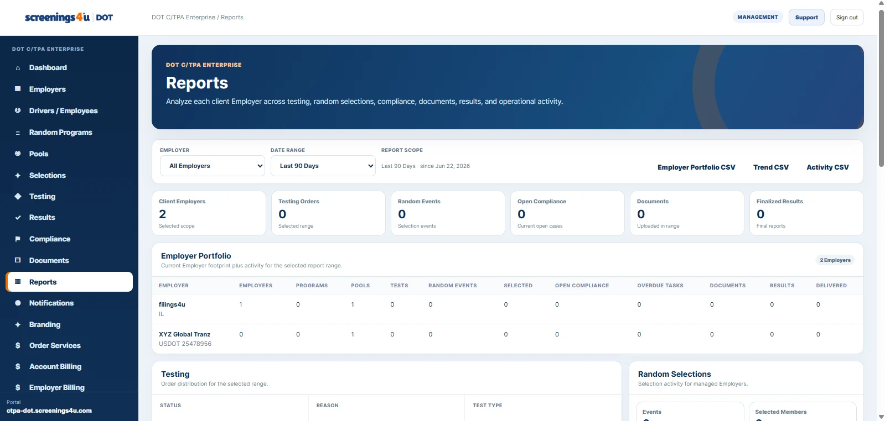

This article focuses on how to organize the work inside a DOT program. It is operational guidance for using a structured workforce and compliance system; it is not a substitute for the rules or official agency guidance that apply to your organization.
Treat each employer as its own workspace
A C/TPA can manage many customers, but each employer still needs a distinct workforce, program, testing, compliance, document, and billing context. Clear employer scoping reduces the risk of viewing or updating the wrong customer record.
Use portfolio views for supervision
Portfolio dashboards are useful for seeing what requires attention across customers—such as open testing activity, overdue tasks, upcoming renewals, or document issues—without merging the underlying employer data.
Keep sponsored access tied to the customer relationship
When the C/TPA sponsors an employer portal, access should reflect that managed relationship. The employer can manage the areas assigned to it while the C/TPA retains responsibility for the program administration it provides.
Standardize services without flattening differences
Templates and repeatable workflows help a C/TPA scale, but agency differences and employer-specific configurations still matter. A useful platform should make the common work repeatable while preserving the details that differ by customer.
Make billing traceable to services
Employer billing is easier to explain when invoice lines can be connected to the services, testing, administrative work, or recurring programs the C/TPA actually provided.